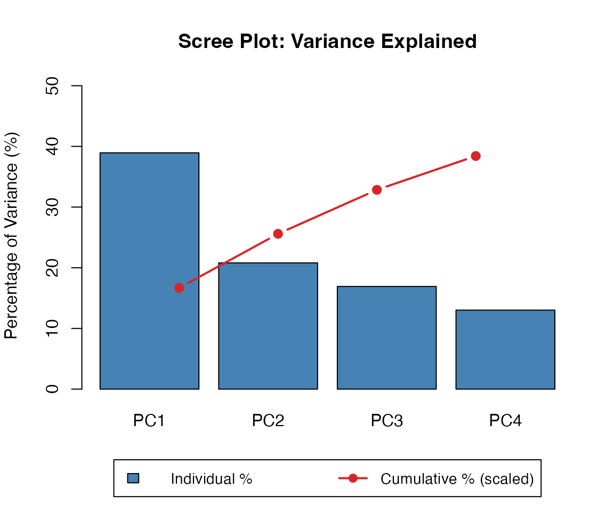
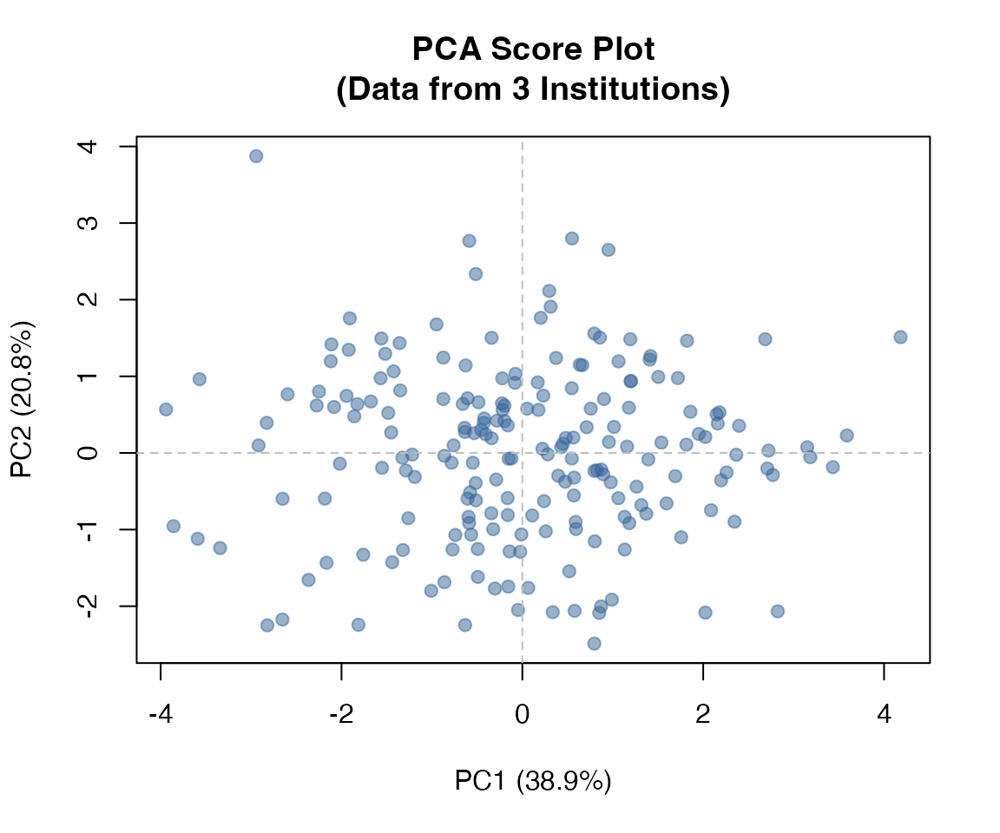

This vignette demonstrates the statistical analysis capabilities of dsVertClient: correlation matrices, principal component analysis (PCA), and generalized linear models (GLMs) across vertically partitioned data.
Our Environment
We have three institutions with aligned data for 200 patients:
| Institution | Variables |
|---|---|
| inst_A | age, weight |
| inst_B | height, bmi |
| inst_C | glucose, cholesterol |
All institutions also have outcome variables (blood pressure, diabetes status, hospital visits, costs) for the GLM examples.
Correlation Analysis
Understanding the Challenge
Computing correlations across vertically partitioned data is
non-trivial. Consider computing the correlation between age
(at Institution A) and glucose (at Institution C):
- Institution A knows
agevalues but notglucose - Institution C knows
glucosevalues but notage - Neither can compute correlation alone
- We cannot send raw values between institutions
The Solution: Block SVD
dsVertClient uses Block Singular Value Decomposition (SVD) to compute correlations without sharing raw data:
- Each institution computes a partial SVD on its standardized data
- Only the U×D matrices (left singular vectors × singular values) are returned
- The client combines these to reconstruct the full correlation matrix
The mathematical details are in the Methodology vignette.
Computing the Correlation Matrix
We define which variables belong to which institution and compute the correlation matrix:
variables <- list(
inst_A = c("age", "weight"),
inst_B = c("height", "bmi"),
inst_C = c("glucose", "cholesterol")
)
cor_matrix <- ds.vertCor(
data_name = "D_aligned",
variables = variables,
datasources = connections
)
round(cor_matrix, 3)#> age weight height bmi glucose cholesterol
#> age 1.000 0.000 -0.374 -0.590 0.431 -0.129
#> weight 0.000 1.000 0.310 0.631 -0.026 -0.001
#> height -0.374 0.310 1.000 0.000 -0.268 -0.019
#> bmi -0.590 0.631 0.000 1.000 -0.213 0.097
#> glucose 0.431 -0.026 -0.268 -0.213 1.000 0.000
#> cholesterol -0.129 -0.001 -0.019 0.097 0.000 1.000The matrix shows correlations between all 6 variables across 3
institutions. Note how cross-institution correlations (e.g., between
glucose at Institution C and age at
Institution A) are computed without either institution seeing
the other’s data.
Selected Correlations
data.frame(
Correlation = c("weight-age", "bmi-height", "cholesterol-glucose",
"glucose-age", "bmi-age", "cholesterol-bmi"),
Institutions = c("A-A", "B-B", "C-C", "C-A", "B-A", "C-B"),
r = c(cor_matrix["weight", "age"],
cor_matrix["bmi", "height"],
cor_matrix["cholesterol", "glucose"],
cor_matrix["glucose", "age"],
cor_matrix["bmi", "age"],
cor_matrix["cholesterol", "bmi"])
)#> Correlation Institutions r
#> 1 weight-age A-A -4.999003e-16
#> 2 bmi-height B-B 1.873238e-15
#> 3 cholesterol-glucose C-C -3.070274e-16
#> 4 glucose-age C-A 4.306907e-01
#> 5 bmi-age B-A -5.897249e-01
#> 6 cholesterol-bmi C-B 9.720913e-02The first three are within-institution correlations; the last three are cross-institution correlations computed via Block SVD.
Visualizing Correlations
heatmap(
cor_matrix,
symm = TRUE,
col = colorRampPalette(c("#2166AC", "#F7F7F7", "#B2182B"))(50),
margins = c(10, 10),
main = "Correlation Heatmap"
)Principal Component Analysis (PCA)
Understanding Distributed PCA
PCA finds linear combinations of variables that capture maximum variance. With vertically partitioned data, variables are spread across institutions, making traditional PCA impossible.
dsVertClient uses the same Block SVD approach as correlation analysis to perform distributed PCA:
- Each institution computes U×D from its local SVD
- The client combines these matrices
- A final SVD produces the principal components
Performing PCA
pca_result <- ds.vertPCA(
data_name = "D_aligned",
variables = variables,
n_components = 4,
datasources = connections
)
pca_result#> Principal Component Analysis (Vertically Partitioned)
#> ======================================================
#>
#> Observations: 200
#> Variables: 6
#> Components: 4
#>
#> Variance Explained:
#> Component Variance Percent Cumulative
#> PC1 464.9728 38.94 38.94
#> PC2 248.3740 20.80 59.74
#> PC3 201.9797 16.92 76.66
#> PC4 155.4281 13.02 89.68Understanding PCA Output
The PCA result contains three key components:
Variance explained - how much of the total variance each component captures:
data.frame(
Component = paste0("PC", 1:4),
Variance = round(pca_result$variance, 4),
Percent = paste0(round(pca_result$variance_pct, 1), "%"),
Cumulative = paste0(round(pca_result$cumulative_pct, 1), "%")
)#> Component Variance Percent Cumulative
#> 1 PC1 464.9728 38.9% 38.9%
#> 2 PC2 248.3740 20.8% 59.7%
#> 3 PC3 201.9797 16.9% 76.7%
#> 4 PC4 155.4281 13% 89.7%Loadings - how each variable contributes to each component:
loadings_df <- as.data.frame(round(pca_result$loadings, 3))
colnames(loadings_df) <- paste0("PC", 1:4)
loadings_df#> PC1 PC2 PC3 PC4
#> age -0.474 -0.326 -0.200 0.422
#> weight 0.259 -0.626 0.519 0.261
#> height 0.651 -0.410 -0.577 -0.144
#> bmi 0.199 -0.047 0.557 -0.035
#> glucose -0.494 -0.570 -0.058 -0.515
#> cholesterol 0.031 0.078 0.211 -0.683Scores - each patient’s position in PC space (first 5 shown):
scores_preview <- as.data.frame(round(pca_result$scores[1:5, ], 3))
colnames(scores_preview) <- paste0("PC", 1:4)
scores_preview#> PC1 PC2 PC3 PC4
#> 1 -1.921 1.346 -0.251 0.923
#> 2 0.170 0.921 -2.685 -0.875
#> 3 -0.633 -2.246 -0.451 -1.403
#> 4 1.595 -0.658 1.178 -1.268
#> 5 1.062 -0.590 0.268 -0.508Visualizing PCA Results
par(mar = c(6, 4, 4, 2))
barplot(
pca_result$variance_pct,
names.arg = paste0("PC", 1:4),
main = "Scree Plot: Variance Explained",
ylab = "Percentage of Variance (%)",
col = "steelblue",
ylim = c(0, max(pca_result$variance_pct) * 1.3)
)
# Add cumulative line on secondary scale
cum_scaled <- pca_result$cumulative_pct / 100 * max(pca_result$variance_pct) * 1.1
lines(1:4, cum_scaled, type = "b", col = "#d62728", pch = 19, lwd = 2)
# Legend below the plot
par(xpd = TRUE)
legend("bottom", inset = c(0, -0.35), legend = c("Individual %", "Cumulative % (scaled)"),
fill = c("steelblue", NA), border = c("black", NA),
lty = c(NA, 1), col = c(NA, "#d62728"), pch = c(NA, 19), lwd = c(NA, 2),
horiz = TRUE, bg = "white", cex = 0.9)
plot(
pca_result$scores[, 1],
pca_result$scores[, 2],
xlab = sprintf("PC1 (%.1f%%)", pca_result$variance_pct[1]),
ylab = sprintf("PC2 (%.1f%%)", pca_result$variance_pct[2]),
main = "PCA Score Plot\n(Data from 3 Institutions)",
pch = 19,
col = rgb(0.2, 0.4, 0.6, 0.5)
)
abline(h = 0, v = 0, lty = 2, col = "gray")
Generalized Linear Models (GLM)
The Block Coordinate Descent Algorithm
dsVertClient fits GLMs using Block Coordinate Descent (BCD), an iterative algorithm that:
- Divides predictors into “blocks” (one per institution)
- Updates each block’s coefficients while holding others fixed
- Shares only the linear predictor (η = Xβ), not raw data
- Iterates until convergence
This ensures:
- Each institution’s raw data stays local
- Coefficients are computed locally at each institution
- Only aggregate predictions are shared between iterations
Supported GLM Families
| Family | Link | Response Type | Example Use |
|---|---|---|---|
gaussian |
Identity | Continuous | Blood pressure, BMI |
binomial |
Logit | Binary (0/1) | Disease status, mortality |
poisson |
Log | Count | Hospital visits, events |
Gamma |
Log | Positive continuous | Costs, durations |
inverse.gaussian |
Log | Positive continuous | Reaction times |
Example 1: Gaussian GLM (Linear Regression)
Predict blood pressure from age, BMI, and glucose:
x_vars <- list(
inst_A = c("age", "weight"),
inst_B = c("bmi"),
inst_C = c("glucose")
)
model_bp <- ds.vertGLM(
data_name = "D_aligned",
y_var = "outcome_bp",
x_vars = x_vars,
family = "gaussian",
tol = 1e-5,
verbose = FALSE,
datasources = connections
)
summary(model_bp)#>
#> Vertically Partitioned GLM - Summary
#> ====================================
#>
#> Call:
#> ds.vertGLM(data_name = "D_aligned", y_var = "outcome_bp", x_vars = x_vars,
#> family = "gaussian", tol = 1e-05, verbose = FALSE, datasources = connections)
#>
#> Family: gaussian
#> Observations: 200
#> Predictors: 4
#> Regularization (lambda): 1e-04
#>
#> Convergence:
#> Iterations: 100
#> Converged: FALSE
#>
#> Deviance:
#> Null deviance: 23440.1350 on 199 degrees of freedom
#> Residual deviance: 29254.8850 on 196 degrees of freedom
#>
#> Model Fit:
#> Pseudo R-squared (McFadden): -0.2481
#> AIC: 29262.8850
#>
#> Coefficients:
#> Estimate
#> age 0.755932
#> weight 0.369646
#> bmi 0.424892
#> glucose 0.510653The summary shows:
- Coefficients: Effect of each predictor on blood pressure
- Deviance: Measures model fit (lower = better)
- Null deviance: Deviance of intercept-only model
- Pseudo R²: Proportion of deviance explained
- AIC: Model comparison metric (lower = better)
Example 2: Binomial GLM (Logistic Regression)
Predict diabetes risk:
model_diabetes <- ds.vertGLM(
data_name = "D_aligned",
y_var = "outcome_diabetes",
x_vars = x_vars,
family = "binomial",
tol = 1e-5,
verbose = FALSE,
datasources = connections
)
summary(model_diabetes)#>
#> Vertically Partitioned GLM - Summary
#> ====================================
#>
#> Call:
#> ds.vertGLM(data_name = "D_aligned", y_var = "outcome_diabetes",
#> x_vars = x_vars, family = "binomial", tol = 1e-05, verbose = FALSE,
#> datasources = connections)
#>
#> Family: binomial
#> Observations: 200
#> Predictors: 4
#> Regularization (lambda): 1e-04
#>
#> Convergence:
#> Iterations: 100
#> Converged: FALSE
#>
#> Deviance:
#> Null deviance: 200.1610 on 199 degrees of freedom
#> Residual deviance: 199.3624 on 196 degrees of freedom
#>
#> Model Fit:
#> Pseudo R-squared (McFadden): 0.0040
#> AIC: 207.3624
#>
#> Coefficients:
#> Estimate
#> age 0.022473
#> weight -0.018808
#> bmi 0.088633
#> glucose -0.030695For logistic regression, coefficients are on the log-odds scale. Exponentiating gives odds ratios:
odds_ratios <- exp(coef(model_diabetes))
data.frame(
Variable = names(odds_ratios),
OddsRatio = round(odds_ratios, 3)
)#> Variable OddsRatio
#> age age 1.023
#> weight weight 0.981
#> bmi bmi 1.093
#> glucose glucose 0.970An odds ratio > 1 means higher risk per unit increase in the predictor.
Example 3: Poisson GLM (Count Data)
Predict number of hospital visits:
model_visits <- ds.vertGLM(
data_name = "D_aligned",
y_var = "outcome_visits",
x_vars = list(inst_A = c("age"), inst_B = c("bmi")),
family = "poisson",
tol = 1e-5,
verbose = FALSE,
datasources = connections
)
summary(model_visits)#>
#> Vertically Partitioned GLM - Summary
#> ====================================
#>
#> Call:
#> ds.vertGLM(data_name = "D_aligned", y_var = "outcome_visits",
#> x_vars = list(inst_A = c("age"), inst_B = c("bmi")), family = "poisson",
#> tol = 1e-05, verbose = FALSE, datasources = connections)
#>
#> Family: poisson
#> Observations: 200
#> Predictors: 2
#> Regularization (lambda): 1e-04
#>
#> Convergence:
#> Iterations: 30
#> Converged: TRUE
#>
#> Deviance:
#> Null deviance: 255.8463 on 199 degrees of freedom
#> Residual deviance: 247.5245 on 198 degrees of freedom
#>
#> Model Fit:
#> Pseudo R-squared (McFadden): 0.0325
#> AIC: 251.5245
#>
#> Coefficients:
#> Estimate
#> age 0.006913
#> bmi -0.003566For Poisson regression, coefficients are on the log scale. Exponentiate to get rate ratios.
Example 4: Gamma GLM (Positive Continuous)
Predict healthcare costs:
model_cost <- ds.vertGLM(
data_name = "D_aligned",
y_var = "outcome_cost",
x_vars = list(inst_A = c("age"), inst_B = c("bmi")),
family = "Gamma",
tol = 1e-5,
verbose = FALSE,
datasources = connections
)
summary(model_cost)#>
#> Vertically Partitioned GLM - Summary
#> ====================================
#>
#> Call:
#> ds.vertGLM(data_name = "D_aligned", y_var = "outcome_cost", x_vars = list(inst_A = c("age"),
#> inst_B = c("bmi")), family = "Gamma", tol = 1e-05, verbose = FALSE,
#> datasources = connections)
#>
#> Family: Gamma
#> Observations: 200
#> Predictors: 2
#> Regularization (lambda): 1e-04
#>
#> Convergence:
#> Iterations: 100
#> Converged: FALSE
#>
#> Deviance:
#> Null deviance: 52.7530 on 199 degrees of freedom
#> Residual deviance: 113721968541478.3125 on 198 degrees of freedom
#>
#> Model Fit:
#> Pseudo R-squared (McFadden): -2155744002527.2092
#> AIC: 113721968541482.3125
#>
#> Coefficients:
#> Estimate
#> age -44.69691
#> bmi 100.00000The Gamma family is appropriate for:
- Strictly positive continuous outcomes
- Right-skewed distributions
- Variance proportional to mean squared (common in cost data)
Example 5: Inverse Gaussian GLM
An alternative for positive continuous data with different variance structure:
model_cost_ig <- ds.vertGLM(
data_name = "D_aligned",
y_var = "outcome_cost",
x_vars = list(inst_A = c("age"), inst_B = c("bmi")),
family = "inverse.gaussian",
tol = 1e-5,
verbose = FALSE,
datasources = connections
)
summary(model_cost_ig)#>
#> Vertically Partitioned GLM - Summary
#> ====================================
#>
#> Call:
#> ds.vertGLM(data_name = "D_aligned", y_var = "outcome_cost", x_vars = list(inst_A = c("age"),
#> inst_B = c("bmi")), family = "inverse.gaussian", tol = 1e-05,
#> verbose = FALSE, datasources = connections)
#>
#> Family: inverse.gaussian
#> Observations: 200
#> Predictors: 2
#> Regularization (lambda): 1e-04
#>
#> Convergence:
#> Iterations: 100
#> Converged: FALSE
#>
#> Deviance:
#> Null deviance: 0.0453 on 199 degrees of freedom
#> Residual deviance: 22674899501047657529344.0000 on 198 degrees of freedom
#>
#> Model Fit:
#> Pseudo R-squared (McFadden): -500732668821773265928192.0000
#> AIC: 22674899501047657529344.0000
#>
#> Coefficients:
#> Estimate
#> age -41.52758
#> bmi 100.00000Comparing Models
models <- list(
"Blood Pressure (gaussian)" = model_bp,
"Diabetes Risk (binomial)" = model_diabetes,
"Hospital Visits (poisson)" = model_visits,
"Healthcare Cost (Gamma)" = model_cost,
"Healthcare Cost (inv.gauss)" = model_cost_ig
)
data.frame(
Model = names(models),
Family = sapply(models, function(m) m$family),
Predictors = sapply(models, function(m) m$n_vars),
Deviance = sapply(models, function(m) round(m$deviance, 2)),
Pseudo_R2 = sapply(models, function(m) round(m$pseudo_r2, 4)),
AIC = sapply(models, function(m) round(m$aic, 2)),
Converged = sapply(models, function(m) m$converged)
)#> Model Family
#> Blood Pressure (gaussian) Blood Pressure (gaussian) gaussian
#> Diabetes Risk (binomial) Diabetes Risk (binomial) binomial
#> Hospital Visits (poisson) Hospital Visits (poisson) poisson
#> Healthcare Cost (Gamma) Healthcare Cost (Gamma) Gamma
#> Healthcare Cost (inv.gauss) Healthcare Cost (inv.gauss) inverse.gaussian
#> Predictors Deviance Pseudo_R2 AIC
#> Blood Pressure (gaussian) 4 2.925488e+04 -2.481000e-01 2.926288e+04
#> Diabetes Risk (binomial) 4 1.993600e+02 4.000000e-03 2.073600e+02
#> Hospital Visits (poisson) 2 2.475200e+02 3.250000e-02 2.515200e+02
#> Healthcare Cost (Gamma) 2 1.137220e+14 -2.155744e+12 1.137220e+14
#> Healthcare Cost (inv.gauss) 2 2.267490e+22 -5.007327e+23 2.267490e+22
#> Converged
#> Blood Pressure (gaussian) FALSE
#> Diabetes Risk (binomial) FALSE
#> Hospital Visits (poisson) TRUE
#> Healthcare Cost (Gamma) FALSE
#> Healthcare Cost (inv.gauss) FALSEPrivacy Summary
Throughout all these analyses:
| Analysis | What’s Shared | What’s Protected |
|---|---|---|
| Correlation | U×D matrices from SVD | Raw variable values |
| PCA | U×D matrices from SVD | Raw variable values |
| GLM | Linear predictors (η = Xβ) | Raw data, final coefficients during iteration |
No raw patient-level data ever leaves any institution.
For a detailed explanation of the mathematical methodology, see the Methodology vignette.